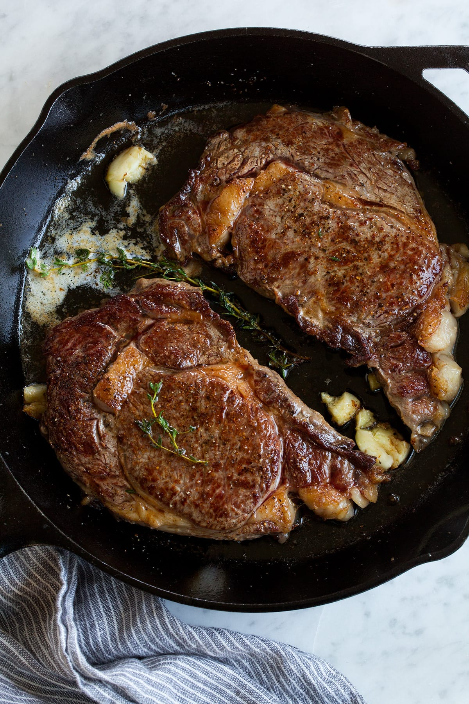

Pan Seared Steak

Cooking a pan seared steak can be tricky, whether that be getting a crispy golden-brown sear on both sides or choosing the right ingredients to give your steak that extra boost of flavor. There are also many different cuts of steaks to choose from aswell as thickness of the steak which can alter the results. Although I recommend Ribeye or New York Strip for this recipe any steak will work with a little tweaking to the cooking time. Once you learn this recipe it will quickly be one of your favorites to cook! I recommend making bearnaise sauce for your steak which I have a recipe for here.